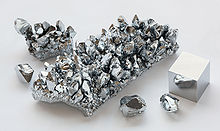
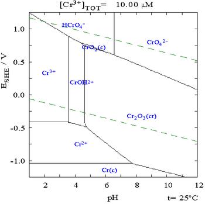
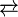

Chromium
| 
chromium crystals
|
|||||||||||||||||||||||||||||||||||||||||||||||||||||||||||||||||||||||||||||||||||||||||||||||||||||||||||||||||||||||||||||||||||||||||||||||||||||||||||||||||||||||||||||||||||||||||||||||||||||||||||||||||||||||||||||||||||||
| General properties | |||||||||||||||||||||||||||||||||||||||||||||||||||||||||||||||||||||||||||||||||||||||||||||||||||||||||||||||||||||||||||||||||||||||||||||||||||||||||||||||||||||||||||||||||||||||||||||||||||||||||||||||||||||||||||||||||||||
|---|---|---|---|---|---|---|---|---|---|---|---|---|---|---|---|---|---|---|---|---|---|---|---|---|---|---|---|---|---|---|---|---|---|---|---|---|---|---|---|---|---|---|---|---|---|---|---|---|---|---|---|---|---|---|---|---|---|---|---|---|---|---|---|---|---|---|---|---|---|---|---|---|---|---|---|---|---|---|---|---|---|---|---|---|---|---|---|---|---|---|---|---|---|---|---|---|---|---|---|---|---|---|---|---|---|---|---|---|---|---|---|---|---|---|---|---|---|---|---|---|---|---|---|---|---|---|---|---|---|---|---|---|---|---|---|---|---|---|---|---|---|---|---|---|---|---|---|---|---|---|---|---|---|---|---|---|---|---|---|---|---|---|---|---|---|---|---|---|---|---|---|---|---|---|---|---|---|---|---|---|---|---|---|---|---|---|---|---|---|---|---|---|---|---|---|---|---|---|---|---|---|---|---|---|---|---|---|---|---|---|---|---|---|---|---|---|---|---|---|---|---|---|---|---|---|---|---|---|---|
| Name, symbol | chromium, Cr | ||||||||||||||||||||||||||||||||||||||||||||||||||||||||||||||||||||||||||||||||||||||||||||||||||||||||||||||||||||||||||||||||||||||||||||||||||||||||||||||||||||||||||||||||||||||||||||||||||||||||||||||||||||||||||||||||||||
| Pronunciation | /ˈkroʊmiəm/ KROH-mee-əm |
||||||||||||||||||||||||||||||||||||||||||||||||||||||||||||||||||||||||||||||||||||||||||||||||||||||||||||||||||||||||||||||||||||||||||||||||||||||||||||||||||||||||||||||||||||||||||||||||||||||||||||||||||||||||||||||||||||
| Appearance | silvery metallic | ||||||||||||||||||||||||||||||||||||||||||||||||||||||||||||||||||||||||||||||||||||||||||||||||||||||||||||||||||||||||||||||||||||||||||||||||||||||||||||||||||||||||||||||||||||||||||||||||||||||||||||||||||||||||||||||||||||
| Chromium in the periodic table | |||||||||||||||||||||||||||||||||||||||||||||||||||||||||||||||||||||||||||||||||||||||||||||||||||||||||||||||||||||||||||||||||||||||||||||||||||||||||||||||||||||||||||||||||||||||||||||||||||||||||||||||||||||||||||||||||||||
|
|||||||||||||||||||||||||||||||||||||||||||||||||||||||||||||||||||||||||||||||||||||||||||||||||||||||||||||||||||||||||||||||||||||||||||||||||||||||||||||||||||||||||||||||||||||||||||||||||||||||||||||||||||||||||||||||||||||
| Atomic number | 24 | ||||||||||||||||||||||||||||||||||||||||||||||||||||||||||||||||||||||||||||||||||||||||||||||||||||||||||||||||||||||||||||||||||||||||||||||||||||||||||||||||||||||||||||||||||||||||||||||||||||||||||||||||||||||||||||||||||||
| Standard atomic weight (±) | 51.9961(6)[1] | ||||||||||||||||||||||||||||||||||||||||||||||||||||||||||||||||||||||||||||||||||||||||||||||||||||||||||||||||||||||||||||||||||||||||||||||||||||||||||||||||||||||||||||||||||||||||||||||||||||||||||||||||||||||||||||||||||||
| Element category | transition metal | ||||||||||||||||||||||||||||||||||||||||||||||||||||||||||||||||||||||||||||||||||||||||||||||||||||||||||||||||||||||||||||||||||||||||||||||||||||||||||||||||||||||||||||||||||||||||||||||||||||||||||||||||||||||||||||||||||||
| Group, block | group 6, d-block | ||||||||||||||||||||||||||||||||||||||||||||||||||||||||||||||||||||||||||||||||||||||||||||||||||||||||||||||||||||||||||||||||||||||||||||||||||||||||||||||||||||||||||||||||||||||||||||||||||||||||||||||||||||||||||||||||||||
| Period | period 4 | ||||||||||||||||||||||||||||||||||||||||||||||||||||||||||||||||||||||||||||||||||||||||||||||||||||||||||||||||||||||||||||||||||||||||||||||||||||||||||||||||||||||||||||||||||||||||||||||||||||||||||||||||||||||||||||||||||||
| Electron configuration | [Ar] 3d5 4s1 | ||||||||||||||||||||||||||||||||||||||||||||||||||||||||||||||||||||||||||||||||||||||||||||||||||||||||||||||||||||||||||||||||||||||||||||||||||||||||||||||||||||||||||||||||||||||||||||||||||||||||||||||||||||||||||||||||||||
| per shell | 2, 8, 13, 1 | ||||||||||||||||||||||||||||||||||||||||||||||||||||||||||||||||||||||||||||||||||||||||||||||||||||||||||||||||||||||||||||||||||||||||||||||||||||||||||||||||||||||||||||||||||||||||||||||||||||||||||||||||||||||||||||||||||||
| Physical properties | |||||||||||||||||||||||||||||||||||||||||||||||||||||||||||||||||||||||||||||||||||||||||||||||||||||||||||||||||||||||||||||||||||||||||||||||||||||||||||||||||||||||||||||||||||||||||||||||||||||||||||||||||||||||||||||||||||||
| Phase | solid | ||||||||||||||||||||||||||||||||||||||||||||||||||||||||||||||||||||||||||||||||||||||||||||||||||||||||||||||||||||||||||||||||||||||||||||||||||||||||||||||||||||||||||||||||||||||||||||||||||||||||||||||||||||||||||||||||||||
| Melting point | 2180 K (1907 °C, 3465 °F) | ||||||||||||||||||||||||||||||||||||||||||||||||||||||||||||||||||||||||||||||||||||||||||||||||||||||||||||||||||||||||||||||||||||||||||||||||||||||||||||||||||||||||||||||||||||||||||||||||||||||||||||||||||||||||||||||||||||
| Boiling point | 2944 K (2671 °C, 4840 °F) | ||||||||||||||||||||||||||||||||||||||||||||||||||||||||||||||||||||||||||||||||||||||||||||||||||||||||||||||||||||||||||||||||||||||||||||||||||||||||||||||||||||||||||||||||||||||||||||||||||||||||||||||||||||||||||||||||||||
| Density near r.t. | 7.19 g·cm−3 | ||||||||||||||||||||||||||||||||||||||||||||||||||||||||||||||||||||||||||||||||||||||||||||||||||||||||||||||||||||||||||||||||||||||||||||||||||||||||||||||||||||||||||||||||||||||||||||||||||||||||||||||||||||||||||||||||||||
| when liquid, at m.p. | 6.3 g·cm−3 | ||||||||||||||||||||||||||||||||||||||||||||||||||||||||||||||||||||||||||||||||||||||||||||||||||||||||||||||||||||||||||||||||||||||||||||||||||||||||||||||||||||||||||||||||||||||||||||||||||||||||||||||||||||||||||||||||||||
| Heat of fusion | 21.0 kJ·mol−1 | ||||||||||||||||||||||||||||||||||||||||||||||||||||||||||||||||||||||||||||||||||||||||||||||||||||||||||||||||||||||||||||||||||||||||||||||||||||||||||||||||||||||||||||||||||||||||||||||||||||||||||||||||||||||||||||||||||||
| Heat of vaporization | 347 kJ·mol−1 | ||||||||||||||||||||||||||||||||||||||||||||||||||||||||||||||||||||||||||||||||||||||||||||||||||||||||||||||||||||||||||||||||||||||||||||||||||||||||||||||||||||||||||||||||||||||||||||||||||||||||||||||||||||||||||||||||||||
| Molar heat capacity | 23.35 J·mol−1·K−1 | ||||||||||||||||||||||||||||||||||||||||||||||||||||||||||||||||||||||||||||||||||||||||||||||||||||||||||||||||||||||||||||||||||||||||||||||||||||||||||||||||||||||||||||||||||||||||||||||||||||||||||||||||||||||||||||||||||||
vapor pressure
|
|||||||||||||||||||||||||||||||||||||||||||||||||||||||||||||||||||||||||||||||||||||||||||||||||||||||||||||||||||||||||||||||||||||||||||||||||||||||||||||||||||||||||||||||||||||||||||||||||||||||||||||||||||||||||||||||||||||
| Atomic properties | |||||||||||||||||||||||||||||||||||||||||||||||||||||||||||||||||||||||||||||||||||||||||||||||||||||||||||||||||||||||||||||||||||||||||||||||||||||||||||||||||||||||||||||||||||||||||||||||||||||||||||||||||||||||||||||||||||||
| Oxidation states | 6, 5, 4, 3, 2, 1, −1, −2 (depending on the oxidation state, an acidic, basic, or amphoteric oxide) | ||||||||||||||||||||||||||||||||||||||||||||||||||||||||||||||||||||||||||||||||||||||||||||||||||||||||||||||||||||||||||||||||||||||||||||||||||||||||||||||||||||||||||||||||||||||||||||||||||||||||||||||||||||||||||||||||||||
| Electronegativity | Pauling scale: 1.66 | ||||||||||||||||||||||||||||||||||||||||||||||||||||||||||||||||||||||||||||||||||||||||||||||||||||||||||||||||||||||||||||||||||||||||||||||||||||||||||||||||||||||||||||||||||||||||||||||||||||||||||||||||||||||||||||||||||||
| Ionization energies | 1st: 652.9 kJ·mol−1 2nd: 1590.6 kJ·mol−1 3rd: 2987 kJ·mol−1 (more) |
||||||||||||||||||||||||||||||||||||||||||||||||||||||||||||||||||||||||||||||||||||||||||||||||||||||||||||||||||||||||||||||||||||||||||||||||||||||||||||||||||||||||||||||||||||||||||||||||||||||||||||||||||||||||||||||||||||
| Atomic radius | empirical: 128 pm | ||||||||||||||||||||||||||||||||||||||||||||||||||||||||||||||||||||||||||||||||||||||||||||||||||||||||||||||||||||||||||||||||||||||||||||||||||||||||||||||||||||||||||||||||||||||||||||||||||||||||||||||||||||||||||||||||||||
| Covalent radius | 139±5 pm | ||||||||||||||||||||||||||||||||||||||||||||||||||||||||||||||||||||||||||||||||||||||||||||||||||||||||||||||||||||||||||||||||||||||||||||||||||||||||||||||||||||||||||||||||||||||||||||||||||||||||||||||||||||||||||||||||||||
| Miscellanea | |||||||||||||||||||||||||||||||||||||||||||||||||||||||||||||||||||||||||||||||||||||||||||||||||||||||||||||||||||||||||||||||||||||||||||||||||||||||||||||||||||||||||||||||||||||||||||||||||||||||||||||||||||||||||||||||||||||
| Crystal structure | body-centered cubic (bcc)
 |
||||||||||||||||||||||||||||||||||||||||||||||||||||||||||||||||||||||||||||||||||||||||||||||||||||||||||||||||||||||||||||||||||||||||||||||||||||||||||||||||||||||||||||||||||||||||||||||||||||||||||||||||||||||||||||||||||||
| Speed of sound thin rod | 5940 m·s−1 (at 20 °C) | ||||||||||||||||||||||||||||||||||||||||||||||||||||||||||||||||||||||||||||||||||||||||||||||||||||||||||||||||||||||||||||||||||||||||||||||||||||||||||||||||||||||||||||||||||||||||||||||||||||||||||||||||||||||||||||||||||||
| Thermal expansion | 4.9 µm·m−1·K−1 (at 25 °C) | ||||||||||||||||||||||||||||||||||||||||||||||||||||||||||||||||||||||||||||||||||||||||||||||||||||||||||||||||||||||||||||||||||||||||||||||||||||||||||||||||||||||||||||||||||||||||||||||||||||||||||||||||||||||||||||||||||||
| Thermal conductivity | 93.9 W·m−1·K−1 | ||||||||||||||||||||||||||||||||||||||||||||||||||||||||||||||||||||||||||||||||||||||||||||||||||||||||||||||||||||||||||||||||||||||||||||||||||||||||||||||||||||||||||||||||||||||||||||||||||||||||||||||||||||||||||||||||||||
| Electrical resistivity | 125 nΩ·m (at 20 °C) | ||||||||||||||||||||||||||||||||||||||||||||||||||||||||||||||||||||||||||||||||||||||||||||||||||||||||||||||||||||||||||||||||||||||||||||||||||||||||||||||||||||||||||||||||||||||||||||||||||||||||||||||||||||||||||||||||||||
| Magnetic ordering | antiferromagnetic (rather: SDW)[2] | ||||||||||||||||||||||||||||||||||||||||||||||||||||||||||||||||||||||||||||||||||||||||||||||||||||||||||||||||||||||||||||||||||||||||||||||||||||||||||||||||||||||||||||||||||||||||||||||||||||||||||||||||||||||||||||||||||||
| Young's modulus | 279 GPa | ||||||||||||||||||||||||||||||||||||||||||||||||||||||||||||||||||||||||||||||||||||||||||||||||||||||||||||||||||||||||||||||||||||||||||||||||||||||||||||||||||||||||||||||||||||||||||||||||||||||||||||||||||||||||||||||||||||
| Shear modulus | 115 GPa | ||||||||||||||||||||||||||||||||||||||||||||||||||||||||||||||||||||||||||||||||||||||||||||||||||||||||||||||||||||||||||||||||||||||||||||||||||||||||||||||||||||||||||||||||||||||||||||||||||||||||||||||||||||||||||||||||||||
| Bulk modulus | 160 GPa | ||||||||||||||||||||||||||||||||||||||||||||||||||||||||||||||||||||||||||||||||||||||||||||||||||||||||||||||||||||||||||||||||||||||||||||||||||||||||||||||||||||||||||||||||||||||||||||||||||||||||||||||||||||||||||||||||||||
| Poisson ratio | 0.21 | ||||||||||||||||||||||||||||||||||||||||||||||||||||||||||||||||||||||||||||||||||||||||||||||||||||||||||||||||||||||||||||||||||||||||||||||||||||||||||||||||||||||||||||||||||||||||||||||||||||||||||||||||||||||||||||||||||||
| Vickers hardness | 1060 MPa | ||||||||||||||||||||||||||||||||||||||||||||||||||||||||||||||||||||||||||||||||||||||||||||||||||||||||||||||||||||||||||||||||||||||||||||||||||||||||||||||||||||||||||||||||||||||||||||||||||||||||||||||||||||||||||||||||||||
| Brinell hardness | 687-6500 MPa | ||||||||||||||||||||||||||||||||||||||||||||||||||||||||||||||||||||||||||||||||||||||||||||||||||||||||||||||||||||||||||||||||||||||||||||||||||||||||||||||||||||||||||||||||||||||||||||||||||||||||||||||||||||||||||||||||||||
| CAS Registry Number | 7440-47-3 | ||||||||||||||||||||||||||||||||||||||||||||||||||||||||||||||||||||||||||||||||||||||||||||||||||||||||||||||||||||||||||||||||||||||||||||||||||||||||||||||||||||||||||||||||||||||||||||||||||||||||||||||||||||||||||||||||||||
| History | |||||||||||||||||||||||||||||||||||||||||||||||||||||||||||||||||||||||||||||||||||||||||||||||||||||||||||||||||||||||||||||||||||||||||||||||||||||||||||||||||||||||||||||||||||||||||||||||||||||||||||||||||||||||||||||||||||||
| Discovery and first isolation | Louis Nicolas Vauquelin (1797, 1798) | ||||||||||||||||||||||||||||||||||||||||||||||||||||||||||||||||||||||||||||||||||||||||||||||||||||||||||||||||||||||||||||||||||||||||||||||||||||||||||||||||||||||||||||||||||||||||||||||||||||||||||||||||||||||||||||||||||||
| Most stable isotopes | |||||||||||||||||||||||||||||||||||||||||||||||||||||||||||||||||||||||||||||||||||||||||||||||||||||||||||||||||||||||||||||||||||||||||||||||||||||||||||||||||||||||||||||||||||||||||||||||||||||||||||||||||||||||||||||||||||||
|
|||||||||||||||||||||||||||||||||||||||||||||||||||||||||||||||||||||||||||||||||||||||||||||||||||||||||||||||||||||||||||||||||||||||||||||||||||||||||||||||||||||||||||||||||||||||||||||||||||||||||||||||||||||||||||||||||||||
| Decay modes in parentheses are predicted, but have not yet been observed | |||||||||||||||||||||||||||||||||||||||||||||||||||||||||||||||||||||||||||||||||||||||||||||||||||||||||||||||||||||||||||||||||||||||||||||||||||||||||||||||||||||||||||||||||||||||||||||||||||||||||||||||||||||||||||||||||||||
{kind=link}
Chromium is a chemical element with symbol Cr and atomic number 24. It is the first element in Group 6. It is a steely-gray, lustrous, hard and brittle metal[3] which takes a high polish, resists tarnishing, and has a high melting point. The name of the element is derived from the Greek word χρῶμα, chrōma, meaning color,[4] because many of its compounds are intensely colored.
Chromium oxide was used by the Chinese in the Qin dynasty over 2,000 years ago to coat metal weapons found with the Terracotta Army. Chromium was discovered as an element after it came to the attention of the Western world in the red crystalline mineral crocoite (lead(II) chromate), discovered in 1761 and initially used as a pigment. Louis Nicolas Vauquelin first isolated chromium metal from this mineral in 1797. Since Vauquelin's first production of metallic chromium, small amounts of native (free) chromium metal have been discovered in rare minerals, but these are not used commercially. Instead, nearly all chromium is commercially extracted from the single commercially viable ore chromite, which is iron chromium oxide (FeCr2O4). Chromite is also now the chief source of chromium for chromium pigments.
Chromium metal and ferrochromium alloy are commercially produced from chromite by silicothermic or aluminothermic reactions, or by roasting and leaching processes. Chromium metal has proven of high value due to its high corrosion resistance and hardness. A major development was the discovery that steel could be made highly resistant to corrosion and discoloration by adding metallic chromium to form stainless steel. This application, along with chrome plating (electroplating with chromium) currently comprise 85% of the commercial use for the element, with applications for chromium compounds forming the remainder.
Trivalent chromium (Cr(III)) ion is possibly required in trace amounts for sugar and lipid metabolism, although the issue remains in debate.[5] In larger amounts and in different forms, chromium can be toxic and carcinogenic. The most prominent example of toxic chromium is hexavalent chromium (Cr(VI)). Abandoned chromium production sites often require environmental cleanup.
Contents
[hide]Characteristics[edit]
Physical[edit]
Chromium is remarkable for its magnetic properties: it is the only elemental solid which shows antiferromagnetic ordering at room temperature (and below). Above 38 °C, it transforms into a paramagnetic state.[2]
Passivation[edit]
Chromium metal left standing in air is passivated by oxygen, forming a thin protective oxide surface layer. This layer is a spinel structure only a few atoms thick. It is very dense, and prevents the diffusion of oxygen into the underlying material. This barrier is in contrast to iron or plain carbon steels, where the oxygen migrates into the underlying material and causes rusting.[6] The passivation can be enhanced by short contact with oxidizing acids like nitric acid. Passivated chromium is stable against acids. The opposite effect can be achieved by treatment with a strong reducing agent that destroys the protective oxide layer on the metal. Chromium metal treated in this way readily dissolves in weak acids.[7]
Chromium, unlike metals such as iron and nickel, does not suffer from hydrogen embrittlement. However, it does suffer from nitrogen embrittlement, reacting with nitrogen from air and forming brittle nitrides at the high temperatures necessary to work the metal parts.[8]
Occurrence[edit]
{kind=link}
{kind=link}
Chromium is the 22nd most abundant element in Earth's crust with an average concentration of 100 ppm.[9] Chromium compounds are found in the environment, due to erosion of chromium-containing rocks and can be distributed by volcanic eruptions. The concentrations range in soil is between 1 and 300 mg/kg, in sea water 5 to 800 µg/liter, and in rivers and lakes 26 µg/liter to 5.2 mg/liter.[10] Chromium is mined as chromite (FeCr2O4) ore.[11] About two-fifths of the chromite ores and concentrates in the world are produced in South Africa, while Kazakhstan, India, Russia, and Turkey are also substantial producers. Untapped chromite deposits are plentiful, but geographically concentrated in Kazakhstan and southern Africa.[12]
Although rare, deposits of native chromium exist.[13][14] The Udachnaya Pipe in Russia produces samples of the native metal. This mine is a kimberlite pipe, rich in diamonds, and the reducing environment helped produce both elemental chromium and diamond.[15]
The relation between Cr(III) and Cr(VI) strongly depends on pH and oxidative properties of the location, but in most cases, the Cr(III) is the dominating species,[10] although in some areas the ground water can contain up to 39 µg/liter of total chromium of which 30 µg/liter is present as Cr(VI).[16]
Isotopes[edit]
Naturally occurring chromium is composed of three stable isotopes; 52Cr, 53Cr and 54Cr with 52Cr being the most abundant (83.789% natural abundance). 19 radioisotopes have been characterized with the most stable being 50Cr with a half-life of (more than) 1.8×1017 years, and 51Cr with a half-life of 27.7 days. All of the remaining radioactive isotopes have half-lives that are less than 24 hours and the majority of these have half-lives that are less than 1 minute. This element also has 2 meta states.[17]
53Cr is the radiogenic decay product of 53Mn (half-life = 3.74 million years).[18] Chromium isotopic contents are typically combined with manganese isotopic contents and have found application in isotope geology. Mn-Cr isotope ratios reinforce the evidence from 26Al and 107Pd for the early history of the solar system. Variations in 53Cr/52Cr and Mn/Cr ratios from several meteorites indicate an initial 53Mn/55Mn ratio that suggests Mn-Cr isotopic composition must result from in-situ decay of 53Mn in differentiated planetary bodies. Hence 53Cr provides additional evidence for nucleosynthetic processes immediately before coalescence of the solar system.[19]
The isotopes of chromium range in atomic mass from 43 u (43Cr) to 67 u (67Cr). The primary decay mode before the most abundant stable isotope, 52Cr, is electron capture and the primary mode after is beta decay.[17] 53Cr has been posited as a proxy for atmospheric oxygen concentration.[20]
Compounds[edit]
| Oxidation states[note 1][21] |
|
|---|---|
| −2 | Na 2[Cr(CO) 5] |
| −1 | Na 2[Cr 2(CO) 10] |
| 0 | Cr(C 6H 6) 2 |
| +1 | K 3[Cr(CN) 5NO] |
| +2 | CrCl 2 |
| +3 | CrCl 3 |
| +4 | K 2CrF 6 |
| +5 | K 3CrO 8 |
| +6 | K 2CrO 4 |
Chromium is a member of the transition metals, in group 6. Chromium(0) has an electronic configuration of 4s13d5, owing to the lower energy of the high spin configuration. Chromium exhibits a wide range of possible oxidation states, where the +3 state is most stable energetically; the +3 and +6 states are most commonly observed in chromium compounds, whereas the +1, +4 and +5 states are rare.[21]
The following is the Pourbaix diagram for chromium in pure water, perchloric acid or sodium hydroxide:[10][22] 
{kind=link}
Chromium(III)[edit]
{kind=link}
{kind=link}
A large number of chromium(III) compounds are known. Chromium(III)
can be obtained by dissolving elemental chromium in acids like hydrochloric acid or sulfuric acid. The Cr3+
ion has a similar radius (63 pm) to the Al3+
ion (radius 50 pm), so they can replace each other in some compounds, such as in chrome alum and alum. When a trace amount of Cr3+
replaces Al3+
in corundum (aluminium oxide, Al2O3), the red-colored ruby is formed.
Chromium(III) ions tend to form octahedral complexes. The colors of these complexes is determined by the ligands attached to the Cr center. The commercially available chromium(III) chloride hydrate is the dark green complex [CrCl2(H2O)4]Cl. Closely related compounds have different colors: pale green [CrCl(H2O)5]Cl2 and the violet [Cr(H2O)6]Cl3. If water-free green chromium(III) chloride is dissolved in water then the green solution turns violet after some time, due to the substitution of water by chloride in the inner coordination sphere. This kind of reaction is also observed with solutions of chrome alum and other water-soluble chromium(III) salts.
Chromium(III) hydroxide (Cr(OH)3) is amphoteric, dissolving in acidic solutions to form [Cr(H2O)6]3+, and in basic solutions to form [Cr(OH)
6]3−
. It is dehydrated by heating to form the green chromium(III) oxide (Cr2O3), which is the stable oxide with a crystal structure identical to that of corundum.[7]
Chromium(VI)[edit]
{kind=link}
Chromium(VI) compounds are powerful oxidants at low or neutral pH. Most important are chromate anion (CrO2−
4) and dichromate (Cr2O72−) anions, which exist in equilibrium:
- 2 [CrO4]2− + 2 H+  [Cr2O7]2− + H2O
Chromium(VI) halides are known also and include the hexafluoride CrF6 and chromyl chloride (CrO
2Cl
2).[7]
Sodium chromate is produced industrially by the oxidative roasting of chromite ore with calcium or sodium carbonate. The dominant species is therefore, by the law of mass action, determined by the pH of the solution. The change in equilibrium is visible by a change from yellow (chromate) to orange (dichromate), such as when an acid is added to a neutral solution of potassium chromate. At yet lower pH values, further condensation to more complex oxyanions of chromium is possible.
Both the chromate and dichromate anions are strong oxidizing reagents at low pH:[7]
{kind=link}
- Cr
2O2−
7 + 14 H
3O+
+ 6 e− → 2 Cr3+
+ 21 H
2O (ε0 = 1.33 V)
They are, however, only moderately oxidizing at high pH:[7]
- CrO2−
4 + 4 H
2O + 3 e− → Cr(OH)
3 + 5 OH−
(ε0 = −0.13 V)
Chromium(VI) compounds in solution can be detected by adding an acidic hydrogen peroxide solution. The unstable dark blue chromium(VI) peroxide (CrO5) is formed, which can be stabilized as an ether adduct CrO
5·OR
2.[7]
Chromic acid has the hypothetical formula H
2CrO
4. It is a vaguely described chemical, despite many well-defined chromates and dichromates being known. The dark red chromium(VI) oxide CrO
3, the acid anhydride of chromic acid, is sold industrially as "chromic acid".[7] It can be produced by mixing sulfuric acid with dichromate, and is a strong oxidizing agent.
Chromium(V) and chromium(IV)[edit]
The oxidation state +5 is only realized in few compounds but are intermediates in many reactions involving oxidations by chromate. The only binary compound is the volatile chromium(V) fluoride (CrF5). This red solid has a melting point of 30 °C and a boiling point of 117 °C. It can be synthesized by treating chromium metal with fluorine at 400 °C and 200 bar pressure. The peroxochromate(V) is another example of the +5 oxidation state. Potassium peroxochromate (K3[Cr(O2)4]) is made by reacting potassium chromate with hydrogen peroxide at low temperatures. This red brown compound is stable at room temperature but decomposes spontaneously at 150–170 °C.[23]
Compounds of chromium(IV) (in the +4 oxidation state) are slightly more common than those of chromium(V). The tetrahalides, CrF4, CrCl4, and CrBr4, can be produced by treating the trihalides (CrX
3) with the corresponding halogen at elevated
temperatures. Such compounds are susceptible to disproportionation
reactions and are not stable in water.
Chromium(II)[edit]
Many chromium(II) compounds are known, including the water-stable chromium(II) chloride, CrCl
2, which can be made by reduction of chromium(III)
chloride with zinc. The resulting bright blue solution is only stable at
neutral pH.[7] Many chromous carboxylates are also known, most famously, the red chromous acetate (Cr2(O2CCH3)4), which features a quadruple bond.
Chromium(I)[edit]
Most Cr(I) compounds are obtained by oxidation of electron-rich, octahedral Cr(0) complexes. Other Cr(I) complexes contain cyclopentadienyl ligands. As verified by X-ray diffraction, a Cr-Cr quintuple bond (length 183.51(4) pm) has also been described.[24] Extremely bulky monodentate ligands stabilize this compound by shielding the quintuple bond from further reactions.
{kind=link}
Chromium(0)[edit]
Many chromium(0) compounds are known. Most are derivatives of chromium hexacarbonyl or bis(benzene)chromium.
History[edit]
Weapons found in burial pits dating from the late 3rd century B.C. Qin Dynasty of the Terracotta Army near Xi'an, China have been analyzed by archaeologists. Although buried more than 2,000 years ago, the ancient bronze tips of crossbow bolts and swords found at the site showed unexpectedly little corrosion, possibly because the bronze was deliberately coated with a thin layer of chromium oxide.[25][dubious ] However, this oxide layer was not chromium metal or chrome plating as we know it.
Chromium minerals as pigments came to the attention of the west in the 18th century. On 26 July 1761, Johann Gottlob Lehmann found an orange-red mineral in the Beryozovskoye mines in the Ural Mountains which he named Siberian red lead. Though misidentified as a lead compound with selenium and iron components, the mineral was in fact crocoite (lead chromate) with a formula of PbCrO4.[26]
In 1770, Peter Simon Pallas visited the same site as Lehmann and found a red lead mineral that had useful properties as a pigment in paints. The use of Siberian red lead as a paint pigment then developed rapidly. A bright yellow pigment made from crocoite also became fashionable.[26]
{kind=link}
In 1797, Louis Nicolas Vauquelin received samples of crocoite ore. He produced chromium trioxide (CrO3) by mixing crocoite with hydrochloric acid. In 1798, Vauquelin discovered that he could isolate metallic chromium by heating the oxide in a charcoal oven, making him the discoverer of the element.[27] Vauquelin was also able to detect traces of chromium in precious gemstones, such as ruby or emerald.[26][28]
During the 1800s, chromium was primarily used as a component of paints and in tanning salts. At first, crocoite from Russia was the main source, but in 1827, a larger chromite deposit was discovered near Baltimore, United States. This made the United States the largest producer of chromium products till 1848 when large deposits of chromite were found near Bursa, Turkey.[11]
Chromium is also known for its luster when polished. It is used as a protective and decorative coating on car parts, plumbing fixtures, furniture parts and many other items, usually applied by electroplating. Chromium was used for electroplating as early as 1848, but this use only became widespread with the development of an improved process in 1924.[29]
Metal alloys now account for 85% of the use of chromium. The remainder is used in the chemical industry and refractory and foundry industries.
Production[edit]
{kind=link}
{kind=link}
{kind=link}
Approximately 23.3 million metric tons (Mt) of marketable chromite ore were produced in 2011, and converted into 9.5 Mt of ferrochromium.[30] According to John F. Papp, writing for the USGS, "Ferrochromium is the leading end use of chromite ore, [and] stainless steel is the leading end use of ferrochromium."[30]
The largest producers of chromium ore have been South Africa (44%) India (18%), Kazakhstan (16%) Zimbabwe (5%), Finland (4%) Iran (4%) and Brazil (2%) with several other countries producing the rest of less than 10% of the world production.[31]
The two main products of chromium ore refining are ferrochromium and metallic chromium. For those products the ore smelter process differs considerably. For the production of ferrochromium, the chromite ore (FeCr2O4) is reduced in large scale in electric arc furnace or in smaller smelters with either aluminium or silicon in an aluminothermic reaction.[32]
{kind=link}
For the production of pure chromium, the iron has to be separated from the chromium in a two step roasting and leaching process. The chromite ore is heated with a mixture of calcium carbonate and sodium carbonate in the presence of air. The chromium is oxidized to the hexavalent form, while the iron forms the stable Fe2O3. The subsequent leaching at higher elevated temperatures dissolves the chromates and leaves the insoluble iron oxide. The chromate is converted by sulfuric acid into the dichromate.[32]
- 4 FeCr2O4 + 8 Na2CO3 + 7 O2 → 8 Na2CrO4 + 2 Fe2O3 + 8 CO2
- 2 Na2CrO4 + H2SO4 → Na2Cr2O7 + Na2SO4 + H2O
The dichromate is converted to the chromium(III) oxide by reduction with carbon and then reduced in an aluminothermic reaction to chromium.[32]
- Na2Cr2O7 + 2 C → Cr2O3 + Na2CO3 + CO
- Cr2O3 + 2 Al → Al2O3 + 2 Cr
Applications[edit]
Metallurgy[edit]
{kind=link}
The strengthening effect of forming stable metal carbides at the grain boundaries and the strong increase in corrosion resistance made chromium an important alloying material for steel. The high-speed tool steels contain between 3 and 5% chromium. Stainless steel, the main corrosion-proof metal alloy, is formed when chromium is added to iron in sufficient concentrations, usually above 11%. For its formation, ferrochromium is added to the molten iron. Also nickel-based alloys increase in strength due to the formation of discrete, stable metal carbide particles at the grain boundaries. For example, Inconel 718 contains 18.6% chromium. Because of the excellent high-temperature properties of these nickel superalloys, they are used in jet engines and gas turbines in lieu of common structural materials.[33]
The relative high hardness and corrosion resistance of unalloyed chromium makes it a good surface coating, being still the most "popular" metal coating with unparalleled combined durability. A thin layer of chromium is deposited on pretreated metallic surfaces by electroplating techniques. There are two deposition methods: Thin, below 1 µm thickness, layers are deposited by chrome plating, and are used for decorative surfaces. If wear-resistant surfaces are needed then thicker chromium layers are deposited. Both methods normally use acidic chromate or dichromate solutions. To prevent the energy-consuming change in oxidation state, the use of chromium(III) sulfate is under development, but for most applications, the established process is used.[29]
In the chromate conversion coating process, the strong oxidative properties of chromates are used to deposit a protective oxide layer on metals like aluminium, zinc and cadmium. This passivation and the self-healing properties by the chromate stored in the chromate conversion coating, which is able to migrate to local defects, are the benefits of this coating method.[34] Because of environmental and health regulations on chromates, alternative coating methods are under development.[35]
Chromic acid anodizing (or Type I anodizing) of aluminium is another electrochemical process, which does not lead to the deposition of chromium, but uses chromic acid as electrolyte in the solution. During anodization, an oxide layer is formed on the aluminium. The use of chromic acid, instead of the normally used sulfuric acid, leads to a slight difference of these oxide layers.[36] The high toxicity of Cr(VI) compounds, used in the established chromium electroplating process, and the strengthening of safety and environmental regulations demand a search for substitutes for chromium or at least a change to less toxic chromium(III) compounds.[29]
Dye and pigment[edit]
{kind=link}
The mineral crocoite (lead chromate PbCrO4) was used as a yellow pigment shortly after its discovery. After a synthesis method became available starting from the more abundant chromite, chrome yellow was, together with cadmium yellow, one of the most used yellow pigments. The pigment does not photodegrade, but it tends to darken due to the formation of chromium(III) oxide. It has a strong color, and was used for school buses in the US and for Postal Service (for example Deutsche Post) in Europe. The use of chrome yellow declined due to environmental and safety concerns and was replaced by organic pigments or alternatives free from lead and chromium. Other pigments based on chromium are, for example, the bright red pigment chrome red, which is a basic lead chromate (PbCrO4·Pb(OH)2). A very important chromate pigment, which was used widely in metal primer formulations, was zinc chromate, now replaced by zinc phosphate. A wash primer was formulated to replace the dangerous practice of pretreating aluminium aircraft bodies with a phosphoric acid solution. This used zinc tetroxychromate dispersed in a solution of polyvinyl butyral. An 8% solution of phosphoric acid in solvent was added just before application. It was found that an easily oxidized alcohol was an essential ingredient. A thin layer of about 10–15 µm was applied, which turned from yellow to dark green when it was cured. There is still a question as to the correct mechanism. Chrome green is a mixture of Prussian blue and chrome yellow, while the chrome oxide green is chromium(III) oxide.[38]
Chromium oxides are also used as a green color in glassmaking and as a glaze in ceramics.[39] Green chromium oxide is extremely light-fast and as such is used in cladding coatings. It is also the main ingredient in IR reflecting paints, used by the armed forces, to paint vehicles, to give them the same IR reflectance as green leaves.[40]
Synthetic ruby and the first laser[edit]
Natural rubies are corundum (aluminum oxide) crystals that are colored red (the rarest type) due to chromium (III) ions (other colors of corundum gems are termed sapphires). A red-colored artificial ruby may also be achieved by doping chromium(III) into artificial corundum crystals, thus making chromium a requirement for making synthetic rubies.[41] Such a synthetic ruby crystal was the basis for the first laser, produced in 1960, which relied on stimulated emission of light from the chromium atoms in such a crystal.
Wood preservative[edit]
Because of their toxicity, chromium(VI) salts are used for the preservation of wood. For example, chromated copper arsenate (CCA) is used in timber treatment to protect wood from decay fungi, wood-attacking insects, including termites, and marine borers.[42] The formulations contain chromium based on the oxide CrO3 between 35.3% and 65.5%. In the United States, 65,300 metric tons of CCA solution were used in 1996.[42]
Tanning[edit]
Chromium(III) salts, especially chrome alum and chromium(III) sulfate, are used in the tanning of leather. The chromium(III) stabilizes the leather by cross linking the collagen fibers.[43] Chromium tanned leather can contain between 4 and 5% of chromium, which is tightly bound to the proteins.[11] Although the form of chromium used for tanning is not the toxic hexavalent variety, there remains interest in management of chromium in the tanning industry such as recovery and reuse, direct/indirect recycling,[44] use of less chromium or "chrome-less" tanning are practiced to better manage chromium in tanning.
Refractory material[edit]
The high heat resistivity and high melting point makes chromite and chromium(III) oxide a material for high temperature refractory applications, like blast furnaces, cement kilns, molds for the firing of bricks and as foundry sands for the casting of metals. In these applications, the refractory materials are made from mixtures of chromite and magnesite. The use is declining because of the environmental regulations due to the possibility of the formation of chromium(VI).[32]
Catalysts[edit]
Several chromium compounds are used as catalysts for processing hydrocarbons. For example the Phillips catalyst, prepared from chromium oxides, is used for the production of about half the world's polyethylene.[45] Fe-Cr mixed oxides are employed as high-temperature catalysts for the water gas shift reaction.[46][47] Copper chromite is a useful hydrogenation catalyst.[48]
Other use[edit]
- Chromium(IV) oxide (CrO2) is a magnetic compound. Its ideal shape anisotropy, which imparts high coercivity and remnant magnetization, made it a compound superior to the γ-Fe2O3. Chromium(IV) oxide is used to manufacture magnetic tape used in high-performance audio tape and standard audio cassettes.[49] Chromates can prevent corrosion of steel under wet conditions, and therefore chromates are added to drilling muds.[50]
- Chromium(III) oxide is a metal polish known as green rouge.
- Chromic acid is a powerful oxidizing agent and is a useful compound for cleaning laboratory glassware of any trace of organic compounds. It is prepared in situ by dissolving potassium dichromate in concentrated sulfuric acid, which is then used to wash the apparatus. Sodium dichromate is sometimes used because of its higher solubility (50 g/L versus 200 g/L respectively). The use of dichromate cleaning solutions is now phased out due to the high toxicity and environmental concerns. Modern cleaning solutions are highly effective and chromium free. Potassium dichromate is a chemical reagent,used as a titrating agent. It is also used as a mordant (i.e., a fixing agent) for dyes in fabric.
Biological role[edit]
Recently, a paradigm shift has occurred in terms of the status of trivalent chromium (Cr(III) or Cr3+). It was first proposed to be an essential element in the late 1950s and accepted as a trace element in the 1980s. However, scientific studies have continued to fail to produce convincing evidence for this status.[51] Trivalent chromium occurs in trace amounts in foods and waters, and appears to be benign.[52] In contrast, hexavalent chromium (Cr(VI) or Cr6+) is very toxic and mutagenic when inhaled. Cr(VI) has not been established as a carcinogen when in solution, although it may cause allergic contact dermatitis (ACD).[53]
Chromium deficiency, involving a lack of Cr(III) in the body, or perhaps some complex of it, such as glucose tolerance factor is controversial, or is at least extremely rare. Chromium has no verified biological role and has been classified by some as not essential for mammals.[54] However, other reviews have regarded it as an essential trace element in humans.[55] Studies suggest that the biologically active form of chromium (III) is an oligopeptide called Low-molecular-weight chromium-binding substance (LMWCr), which might play a role in the insulin signaling pathway.[56]
Chromium deficiency has been attributed to only three people on long-term parenteral nutrition, which is when a patient is fed a liquid diet through intravenous drips for long periods of time.[57]
Although no biological role for chromium has ever been demonstrated, dietary supplements for chromium include chromium(III) picolinate, chromium(III) polynicotinate, and related materials. The benefit of those supplements is questioned by some studies.[58] The use of chromium-containing dietary supplements is controversial, owing to the absence of any verified biological role, the expense of these supplements, and the complex effects of their use.[5] The popular dietary supplement chromium picolinate complex generates chromosome damage in hamster cells (due to the picolinate ligand).[59] In the United States the dietary guidelines for daily chromium uptake were lowered in 2001 from 50–200 µg for an adult to 35 µg (adult male) and to 25 µg (adult female).[60] In 2014 the European Food Safety Authority published a report stating that the intake of chromium(III) has no beneficial effect on healthy people, thus the Panel removed chromium from the list of nutrients and essential elements.[56][61]
No comprehensive, reliable database of chromium content of food currently exists.[62] Data reported prior to 1980 is unreliable due to analytical error.[62] Chromium content of food varies widely due to differences in soil mineral content, growing season, plant cultivar, and contamination during processing.[62] In addition, large amounts of chromium (and nickel) leech into food cooked in stainless steel.[63][64]
Precautions[edit]
Water insoluble chromium(III) compounds and chromium metal are not considered a health hazard, while the toxicity and carcinogenic properties of chromium(VI) have been known for a long time.[65] Because of the specific transport mechanisms, only limited amounts of chromium(III) enter the cells. Several in vitro studies indicated that high concentrations of chromium(III) in the cell can lead to DNA damage.[66] Acute oral toxicity ranges between 1.5 and 3.3 mg/kg.[67] The proposed beneficial effects of chromium(III) and the use as dietary supplements yielded some controversial results, but recent reviews suggest that moderate uptake of chromium(III) through dietary supplements poses no risk.[66]
Cr(VI)[edit]
The acute oral toxicity for chromium(VI) ranges between 50 and 150 µg/kg.[67] In the body, chromium(VI) is reduced by several mechanisms to chromium(III) already in the blood before it enters the cells. The chromium(III) is excreted from the body, whereas the chromate ion is transferred into the cell by a transport mechanism, by which also sulfate and phosphate ions enter the cell. The acute toxicity of chromium(VI) is due to its strong oxidational properties. After it reaches the blood stream, it damages the kidneys, the liver and blood cells through oxidation reactions. Hemolysis, renal and liver failure are the results of these damages. Aggressive dialysis can improve the situation.[68]
The carcinogenity of chromate dust is known for a long time, and in 1890 the first publication described the elevated cancer risk of workers in a chromate dye company.[69][70] Three mechanisms have been proposed to describe the genotoxicity of chromium(VI). The first mechanism includes highly reactive hydroxyl radicals and other reactive radicals which are by products of the reduction of chromium(VI) to chromium(III). The second process includes the direct binding of chromium(V), produced by reduction in the cell, and chromium(IV) compounds to the DNA. The last mechanism attributed the genotoxicity to the binding to the DNA of the end product of the chromium(III) reduction.[71][72]
Chromium salts (chromates) are also the cause of allergic reactions in some people. Chromates are often used to manufacture, amongst other things, leather products, paints, cement, mortar and anti-corrosives. Contact with products containing chromates can lead to allergic contact dermatitis and irritant dermatitis, resulting in ulceration of the skin, sometimes referred to as "chrome ulcers". This condition is often found in workers that have been exposed to strong chromate solutions in electroplating, tanning and chrome-producing manufacturers.[73][74]
Environmental issues[edit]
As chromium compounds were used in dyes and paints and the tanning of leather, these compounds are often found in soil and groundwater at abandoned industrial sites, now needing environmental cleanup and remediation per the treatment of brownfield land. Primer paint containing hexavalent chromium is still widely used for aerospace and automobile refinishing applications.[75]
In 2010, the Environmental Working Group studied the drinking water in 35 American cities. The study was the first nationwide analysis measuring the presence of the chemical in U.S. water systems. The study found measurable hexavalent chromium in the tap water of 31 of the cities sampled, with Norman, Oklahoma, at the top of list; 25 cities had levels that exceeded California's proposed limit.[76] Note: Concentrations of Cr(VI) in US municipal drinking water supplies reported by EWG are within likely, natural background levels for the areas tested and not necessarily indicative of industrial pollution (CalEPA Fact Sheet), as asserted by EWG. This factor was not taken into consideration in their report.
Notes[edit]
- Jump up ^ Most common oxidation states of chromium are in bold. The right column lists a representative compound for each oxidation state.
References[edit]
- Jump up ^ Standard Atomic Weights 2013. Commission on Isotopic Abundances and Atomic Weights
- ^ Jump up to: a b Fawcett, Eric (1988). "Spin-density-wave antiferromagnetism in chromium". Reviews of Modern Physics 60: 209. Bibcode:1988RvMP...60..209F. doi:10.1103/RevModPhys.60.209.
- Jump up ^ Brandes, E. A.; Greenaway, H. T.; Stone, H. E. N. (1956). "Ductility in Chromium". Nature 178 (587): 587. Bibcode:1956Natur.178..587B. doi:10.1038/178587a0.
- Jump up ^ χρῶμα, Henry George Liddell, Robert Scott, A Greek-English Lexicon, on Perseus
- ^ Jump up to: a b Cronin, Joseph R. (2004). "The Chromium Controversy". Alternative and Complementary Therapies 10 (1): 39–42. doi:10.1089/107628004772830393.
- Jump up ^ Wallwork, G. R. (1976). "The oxidation of alloys". Reports on the Progress Physics 39 (5): 401–485. Bibcode:1976RPPh...39..401W. doi:10.1088/0034-4885/39/5/001.
- ^ Jump up to: a b c d e f g h Holleman, Arnold F.; Wiberg, Egon; Wiberg, Nils (1985). "Chromium". Lehrbuch der Anorganischen Chemie (in German) (91–100 ed.). Walter de Gruyter. pp. 1081–1095. ISBN 3-11-007511-3.
- Jump up ^ National Research Council (U.S.). Committee on Coatings (1970). High-temperature oxidation-resistant coatings: coatings for protection from oxidation of superalloys, refractory metals, and graphite. National Academy of Sciences. ISBN 0-309-01769-6.
- Jump up ^ Emsley, John (2001). "Chromium". Nature's Building Blocks: An A-Z Guide to the Elements. Oxford, England, UK: Oxford University Press. pp. 495–498. ISBN 0-19-850340-7.
- ^ Jump up to: a b c Kotaś, J.; Stasicka, Z (2000). "Chromium occurrence in the environment and methods of its speciation". Environmental Pollution 107 (3): 263–283. doi:10.1016/S0269-7491(99)00168-2. PMID 15092973.
- ^ Jump up to: a b c National Research Council (U.S.). Committee on Biologic Effects of Atmospheric Pollutants (1974). Chromium. National Academy of Sciences. p. 155. ISBN 978-0-309-02217-0.
- Jump up ^ Papp, John F. "Commodity Summary 2009: Chromium" (PDF). United States Geological Survey. Retrieved 2009-03-17.
- Jump up ^ Fleischer, Michael (1982). "New Mineral Names" (PDF). American Mineralogist 67: 854–860.
- Jump up ^ Chromium (with location data), Mindat
- Jump up ^ Chromium from Udachnaya-Vostochnaya pipe, Daldyn, Daldyn-Alakit kimberlite field, Saha Republic (Sakha Republic; Yakutia), Eastern-Siberian Region, Russia, Mindat
- Jump up ^ Gonzalez, A. R.; Ndung'u, K; Flegal, AR (2005). "Natural Occurrence of Hexavalent Chromium in the Aromas Red Sands Aquifer, California". Environmental Science and Technology 39 (15): 5505–5511. Bibcode:2005EnST...39.5505G. doi:10.1021/es048835n. PMID 16124280.
- ^ Jump up to: a b Georges, Audi; Bersillon, O.; Blachot, J.; Wapstra, A.H. (2003). "The NUBASE Evaluation of Nuclear and Decay Properties". Nuclear Physics A (Atomic Mass Data Center) 729: 3–128. Bibcode:2003NuPhA.729....3A. doi:10.1016/j.nuclphysa.2003.11.001.
- Jump up ^ 53Mn. Chart of Nuclides. nndc.bnl.gov
- Jump up ^ Birck, J. L.; Rotaru, M; Allegre, C (1999). "53Mn-53Cr evolution of the early solar system". Geochimica et Cosmochimica Acta 63 (23–24): 4111–4117. Bibcode:1999GeCoA..63.4111B. doi:10.1016/S0016-7037(99)00312-9.
- Jump up ^ Frei, Robert; Gaucher, Claudio; Poulton, Simon W.; Canfield, Don E. (2009). "Fluctuations in Precambrian atmospheric oxygenation recorded by chromium isotopes". Nature 461 (7261): 250–253. Bibcode:2009Natur.461..250F. doi:10.1038/nature08266. PMID 19741707.
- ^ Jump up to: a b Greenwood, Norman N.; Earnshaw, Alan (1997). Chemistry of the Elements (2nd ed.). Butterworth-Heinemann. ISBN 0080379419.
- Jump up ^ Puigdomenech, Ignasi Hydra/Medusa Chemical Equilibrium Database and Plotting Software (2004) KTH Royal Institute of Technology
- Jump up ^ Haxhillazi, Gentiana (2003). "Preparation, Structure and Vibrational Spectroscopy of Tetraperoxo Complexes of CrV+, VV+, NbV+ and TaV+". PhD thesis, University of Siegen.
- Jump up ^ Nguyen, T. et al. (2005). "Synthesis of a Stable Compound with Fivefold Bonding Between Two Chromium(I) Centers". Science 310 (5749): 844–847. Bibcode:2005Sci...310..844N. doi:10.1126/science.1116789. PMID 16179432.
- Jump up ^ Cotterell, Maurice. (2004). The Terracotta Warriors: The Secret Codes of the Emperor's Army. Rochester: Bear and Company. ISBN 1-59143-033-X. Page 102.
- ^ Jump up to: a b c Guertin, Jacques; Jacobs, James Alan & Avakian, Cynthia P. (2005). Chromium (VI) Handbook. CRC Press. pp. 7–11. ISBN 978-1-56670-608-7.
- Jump up ^ Vauquelin, Louis Nicolas (1798). "Memoir on a New Metallic Acid which exists in the Red Lead of Sibiria". Journal of Natural Philosophy, Chemistry, and the Art 3: 146.
- Jump up ^ van der Krogt, Peter. "Chromium". Retrieved 2008-08-24.
- ^ Jump up to: a b c Dennis, J. K.; Such, T. E. (1993). "History of Chromium Plating". Nickel and Chromium Plating. Woodhead Publishing. pp. 9–12. ISBN 978-1-85573-081-6.
- ^ Jump up to: a b Papp, John F. "Mineral Yearbook 2011: Chromium" (PDF). United States Geological Survey. Retrieved 2014-06-03.
- ^ Jump up to: a b Papp, John F. "Mineral Yearbook 2002: Chromium" (PDF). United States Geological Survey. Retrieved 2009-02-16.
- ^ Jump up to: a b c d Papp, John F. & Lipin, Bruce R. (2006). "Chromite". Industrial Minerals & Rocks: Commodities, Markets, and Uses (7th ed.). SME. ISBN 978-0-87335-233-8.
- Jump up ^ Bhadeshia, H. K. D. H. "Nickel-Based Superalloys". University of Cambridge. Retrieved 2009-02-17.
- Jump up ^ Edwards, Joseph (1997). Coating and Surface Treatment Systems for Metals. Finishing Publications Ltd. and ASMy International. pp. 66–71. ISBN 0-904477-16-9.
- Jump up ^ Zhao, J.; Xia, L.; Sehgal, A.; Lu, D.; McCreery, R.L.; Frankel, G.S. (2001). "Effects of chromate and chromate conversion coatings on corrosion of aluminum alloy 2024-T3" (PDF). Surface and Coatings Technology 140 (1): 51–57. doi:10.1016/S0257-8972(01)01003-9.
- Jump up ^ Sprague, J. A.; Smidt, F. A. (1994). ASM Handbook: Surface Engineering. ASM International. ISBN 978-0-87170-384-2. Retrieved 2009-02-17.
- Jump up ^ Worobec, Mary Devine; Hogue, Cheryl (1992). Toxic Substances Controls Guide: Federal Regulation of Chemicals in the Environment. Washington, D.C.: BNA Books. p. 13. ISBN 978-0-87179-752-0.
- Jump up ^ Gettens, Rutherford John (1966). "Chrome yellow". Painting Materials: A Short Encyclopaedia. Courier Dover Publications. pp. 105–106. ISBN 978-0-486-21597-6.
- Jump up ^ Gerd Anger et al. "Chromium Compounds" Ullmann's Encyclopedia of Industrial Chemistry 2005, Wiley-VCH, Weinheim. doi:10.1002/14356007.a07_067
- Jump up ^ Marrion, Alastair (2004). The chemistry and physics of coatings. Royal Society of Chemistry. pp. 287–. ISBN 978-0-85404-604-1.
- Jump up ^ Moss, S. C.; Newnham, R. E. (1964). "The chromium position in ruby" (PDF). Zeitschrift fur Kristallographie 120 (4–5): 359–363. Bibcode:1964ZK....120..359M. doi:10.1524/zkri.1964.120.4-5.359.
- ^ Jump up to: a b Hingston, J. et al. (2001). "Leaching of chromated copper arsenate wood preservatives: a review". Environmental Pollution 111 (1): 53–66. doi:10.1016/S0269-7491(00)00030-0. PMID 11202715.
- Jump up ^ Brown, E. M. (1997). "A Conformational Study of Collagen as Affected by Tanning Procedures". Journal of the American Leather Chemists Association 92: 225–233.
- Jump up ^ Sreeram, K; Ramasami, T (2003). "Sustaining tanning process through conservation, recovery and better utilization of chromium". Resources, Conservation and Recycling 38 (3): 185–212. doi:10.1016/S0921-3449(02)00151-9.
- Jump up ^ Weckhuysen, Bert M.; Schoonheydt, Robert A (1999). "Olefin polymerization over supported chromium oxide catalysts". Catalysis Today 51 (2): 215–221. doi:10.1016/S0920-5861(99)00046-2.
- Jump up ^ Twigg, M. V. E. (1989). "The Water-Gas Shift Reaction". Catalyst Handbook. ISBN 978-0-7234-0857-4.
- Jump up ^ Rhodes, C; Hutchings, G.J.; Ward, A.M. (1995). "Water-gas shift reaction: Finding the mechanistic boundary". Catalysis Today 23: 43–58. doi:10.1016/0920-5861(94)00135-O.
- Jump up ^ Lazier, W. A.; Arnold, H. R. (1939). "Copper Chromite Catalyst". Org. Synth. 19: 31.; Coll. Vol. 2, p. 142
- Jump up ^ Mallinson, John C. (1993). "Chromium Dioxide". The foundations of magnetic recording. Academic Press. ISBN 978-0-12-466626-9.
- Jump up ^ Garverick, Linda (1994). Corrosion in the Petrochemical Industry. ASM International. ISBN 978-0-87170-505-1.
- Jump up ^ Vincent, John B. (2013). "Chapter 6. Chromium: Is It Essential, Pharmacologically Relevant, or Toxic?". In Astrid Sigel; Helmut Sigel; Roland K. O. Sigel. Interrelations between Essential Metal Ions and Human Diseases. Metal Ions in Life Sciences 13. Springer. pp. 171–198. doi:10.1007/978-94-007-7500-8_6.
- Jump up ^ Mertz, Walter (1 April 1993). "Chromium in Human Nutrition: A Review". Journal of Nutrition 123 (4): 626–33. PMID 8463863.
- Jump up ^ "ToxFAQs: Chromium". Agency for Toxic Substances & Disease Registry, Centers for Disease Control and Prevention. February 2001. Archived from the original on 2014-07-08. Retrieved 2007-10-02.
- Jump up ^ Bona, Kristin R.; Love, Sharifa; Rhodes, Nicholas R.; McAdory, Deana; Sinha, Sarmistha Halder; Kern, Naomi; Kent, Julia; Strickland, Jessyln; Wilson, Austin; Beaird, Janis; Ramage, James; Rasco, Jane F.; Vincent, John B. (2011). "Chromium is not an essential trace element for mammals: Effects of a "low-chromium" diet". JBIC Journal of Biological Inorganic Chemistry 16 (3): 381–90. doi:10.1007/s00775-010-0734-y. PMID 21086001.
- Jump up ^ Anderson, R. A. (1997). "Chromium as an Essential Nutrient for Humans". Regulatory Toxicology and Pharmacology 26 (1 Pt 2): S35–S41. doi:10.1006/rtph.1997.1136. PMID 9380836.
- ^ Jump up to: a b Vincent, JB (17 January 2015). "Is the Pharmacological Mode of Action of Chromium(III) as a Second Messenger?". Biological trace element research. doi:10.1007/s12011-015-0231-9. PMID 25595680.
- Jump up ^ Moukarzel A (2009). "Chromium in parenteral nutrition: too little or too much?". Gastroenterology 137 (5 Suppl): S18–S28. doi:10.1053/j.gastro.2009.08.048. PMID 19874946.
- Jump up ^ Vincent, John B. (2010). "Chromium: Celebrating 50 years as an essential element?". Dalton Transactions 39 (16): 3787–94. doi:10.1039/B920480F. PMID 20372701.
- Jump up ^ Stearns, D. M.; W; P; W (1 December 1995). "Chromium(III) picolinate produces chromosome damage in Chinese hamster ovary cells". FASEB J. 9 (15): 1643–8. PMID 8529845.
- Jump up ^ Vincent, J. B. (2007). "Recent advances in the nutritional biochemistry of trivalent chromium". Proceedings of the Nutrition Society 63 (1): 41–47. doi:10.1079/PNS2003315. PMID 15070438.
- Jump up ^ European Food Safety Authority (2014). "Scientific Opinion on Dietary Reference Values for chromium". EFSA Journal 12 (10). doi:10.2903/j.efsa.2014.3845.
- ^ Jump up to: a b c Thor MY; Harnack L; King D; Jasthi B; Pettit J (Dec 2011). "Evaluation of the comprehensiveness and reliability of the chromium composition of foods in the literature". J Food Compost Anal 24 (8): 1147–1152. doi:10.1016/j.jfca.2011.04.006. PMC 3467697. PMID 23066174.
- Jump up ^ Kamerud KL; Hobbie KA; Anderson KA (Aug 28, 2013). "Stainless Steel Leaches Nickel and Chromium into Foods During Cooking". J Agric Food Chem 61 (39): 9495–501. doi:10.1021/jf402400v. PMID 23984718.
- Jump up ^ Flint GN; Packirisamy S (1997). "Purity of food cooked in stainless steel utensils". Food Addit Contam 14 (2): 115–26. doi:10.1080/02652039709374506. PMID 9102344.
- Jump up ^ Barceloux, Donald G.; Barceloux, Donald (1999). "Chromium". Clinical Toxicology 37 (2): 173–194. doi:10.1081/CLT-100102418. PMID 10382554.
- ^ Jump up to: a b Eastmond, David A.; MacGregor, JT; Slesinski, RS (2008). "Trivalent Chromium: Assessing the Genotoxic Risk of an Essential Trace Element and Widely Used Human and Animal Nutritional Supplement". Critical Reviews in Toxicology 38 (3): 173–190. doi:10.1080/10408440701845401. PMID 18324515.
- ^ Jump up to: a b Katz, Sidney A.; Salem, H (1992). "The toxicology of chromium with respect to its chemical speciation: A review". Journal of Applied Toxicology 13 (3): 217–224. doi:10.1002/jat.2550130314. PMID 8326093.
- Jump up ^ Dayan, A. D.; Paine, A. J. (2001). "Mechanisms of chromium toxicity, carcinogenicity and allergenicity: Review of the literature from 1985 to 2000". Human & Experimental Toxicology 20 (9): 439–451. doi:10.1191/096032701682693062. PMID 11776406.
- Jump up ^ Newman, D. (1890). "A case of adeno-carcinoma of the left inferior turbinated body, and perforation of thenasal septum, in the person of a worker in chrome pigments". Glasgow Medical Journal 33: 469–470.
- Jump up ^ Langard, Sverre (1990). "One Hundred Years of Chromium and Cancer: A Review of Epidemiological Evidence and Selected Case Reports". American Journal of Industrial Medicine 17 (2): 189–214. doi:10.1002/ajim.4700170205. PMID 2405656.
- Jump up ^ Cohen, M. D.; Kargacin, B.; Klein, C. B.; Costa, M. (1993). "Mechanisms of chromium carcinogenicity and toxicity". Critical Reviews in Toxicology 23 (3): 255–281. doi:10.3109/10408449309105012. PMID 8260068.
- Jump up ^ Methods to Develop Inhalation Cancer Risk Estimates for Chromium and Nickel Compounds. Research Triangle Park, NC: U.S. Environmental Protection Agency, Office of Air Quality Planning and Standards, Health and Environmental Impacts Division. October 2011. Retrieved 19 March 2015.
- Jump up ^ "Chrome Contact Allergy". DermNet NZ.
- Jump up ^ Basketter, David; Horev, L.; Slodovnik, D.; Merimes, S.; Trattner, A.; Ingber, A. (2000). "Investigation of the threshold for allergic reactivity to chromium". Contact Dermatitis 44 (2): 70–74. doi:10.1034/j.1600-0536.2001.440202.x. PMID 11205406.
- Jump up ^ Baselt, Randall C. (2008). Disposition of Toxic Drugs and Chemicals in Man (8th ed.). Foster City: Biomedical Publications. pp. 305–307. ISBN 978-0-9626523-7-0.
- Jump up ^ "US water has large amounts of likely carcinogen: study". Yahoo News. 2010-12-19. Archived from the original on 2010-12-23. Retrieved 2010-12-19.
External links[edit]
| Wikimedia Commons has media related to Chromium. |
| Look up chromium in Wiktionary, the free dictionary. |
- ATSDR Case Studies in Environmental Medicine: Chromium Toxicity U.S. Department of Health and Human Services
- IARC Monograph "Chromium and Chromium compounds"
- It's Elemental – The Element Chromium
- The Merck Manual – Mineral Deficiency and Toxicity
- National Institute for Occupational Safety and Health – Chromium Page
- Chromium at The Periodic Table of Videos (University of Nottingham)
| [hide] Periodic table (Large cells) | |||||||||||||||||||||||||||||||||
|---|---|---|---|---|---|---|---|---|---|---|---|---|---|---|---|---|---|---|---|---|---|---|---|---|---|---|---|---|---|---|---|---|---|
| 1 | 2 | 3 | 4 | 5 | 6 | 7 | 8 | 9 | 10 | 11 | 12 | 13 | 14 | 15 | 16 | 17 | 18 | ||||||||||||||||
| 1 | H | He | |||||||||||||||||||||||||||||||
| 2 | Li | Be | B | C | N | O | F | Ne | |||||||||||||||||||||||||
| 3 | Na | Mg | Al | Si | P | S | Cl | Ar | |||||||||||||||||||||||||
| 4 | K | Ca | Sc | Ti | V | Cr | Mn | Fe | Co | Ni | Cu | Zn | Ga | Ge | As | Se | Br | Kr | |||||||||||||||
| 5 | Rb | Sr | Y | Zr | Nb | Mo | Tc | Ru | Rh | Pd | Ag | Cd | In | Sn | Sb | Te | I | Xe | |||||||||||||||
| 6 | Cs | Ba | La | Ce | Pr | Nd | Pm | Sm | Eu | Gd | Tb | Dy | Ho | Er | Tm | Yb | Lu | Hf | Ta | W | Re | Os | Ir | Pt | Au | Hg | Tl | Pb | Bi | Po | At | Rn | |
| 7 | Fr | Ra | Ac | Th | Pa | U | Np | Pu | Am | Cm | Bk | Cf | Es | Fm | Md | No | Lr | Rf | Db | Sg | Bh | Hs | Mt | Ds | Rg | Cn | 113 | Fl | 115 | Lv | 117 | 118 | |
|
|
|||||||||||||||||||||||||||||||||
|
||